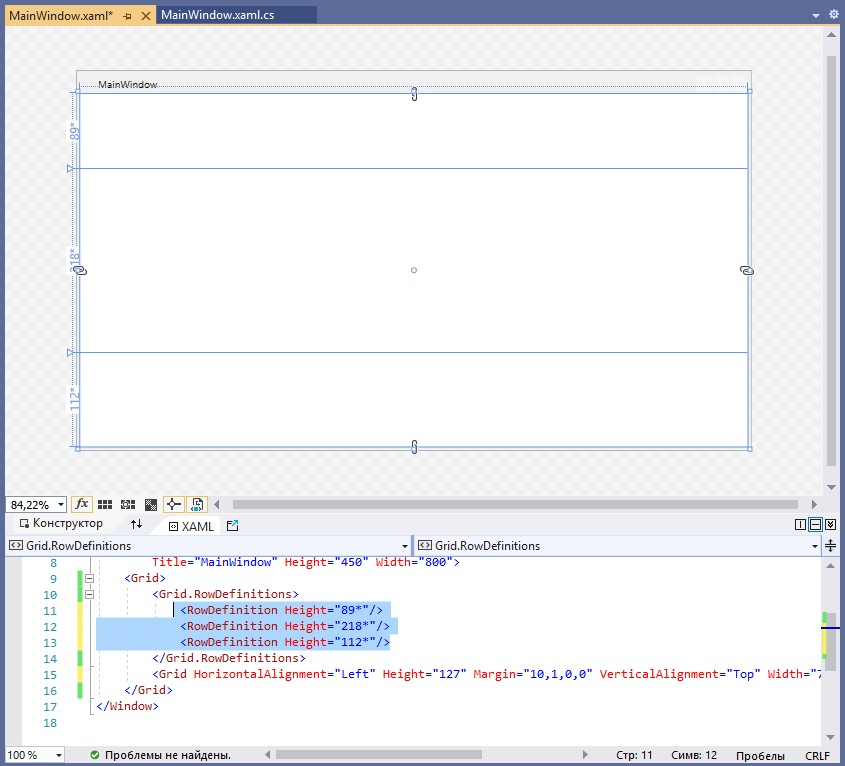
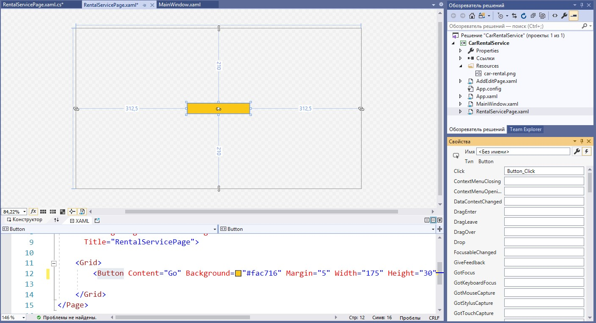
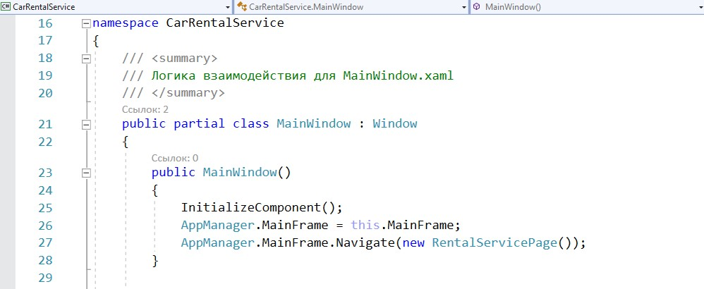
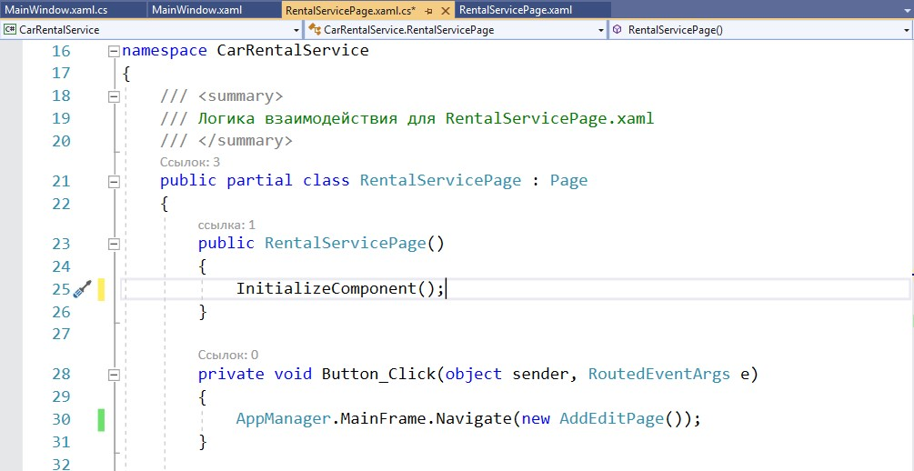
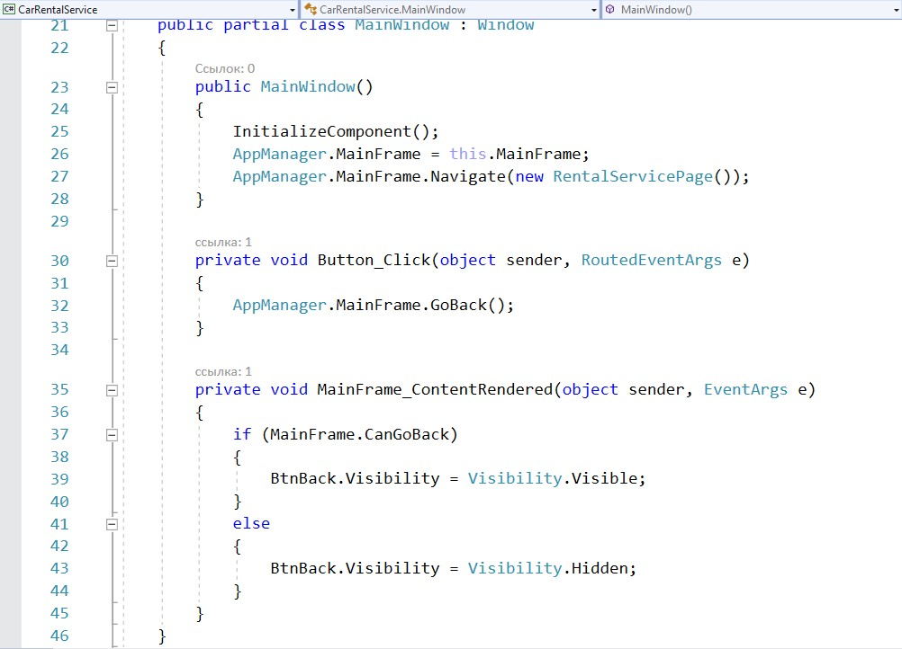

Использование Windows Presentation Foundation (WPF) для создания интерактивных настольных приложений
Cоздание нового проекта
1. Запустить среду разработки Visual Studio
2. Выбрать «Создание проекта»
3. Выбрать «Приложение WPF»
4. Заполнить графу «Имя проекта»
При разработке интерфейсов разработчик может использовать две модели: оконную или страничную (в настоящее время используют чаще)
Оконная модель:
Страничная модель
Элементы управления в приложении
Интерфейс состоит из элементов управления, которые непосредственно взаимодействуют с пользователем или отображают какую-либо информацию
Доступные элементы управления находятся на панели Toolbox
Использование Windows Presentation Foundation (WPF) для создания интерактивных настольных приложений
Контейнеры компановки
1. Grid
Наиболее мощный и часто используемый контейнер, похожий на таблицу. Он содержит столбцы и строки, количество которых можно задать. Для определения строк используется свойство RowDefinition,

а для столбцов — ColumnDefinition
Важно
Для привязки элемента управления к конкретной ячейке необходимо использовать свойства Grid.Column и Grid.Row, причем нумерация строк и столбцов начинается с нуля
2. StackPanel
Позволяет размещать элементы управления поочередно друг за другом
Также существует возможность выбора ориентации размещения с помощью свойства Orientation
Стилизация приложения
Перед стилизацией разметим окно приложения с помощью контейнера Grid

Добавим логотип приложения в Resourses
1. Открыть свойства проекта
2. Открыть вкладку Ресурсы

3. Выбрать список изображений
4. Перетащить логотип в открывшееся окно
5. Установить значение поля Действие при сборке— Resource
Для отображения логотипа используем элемент Image.
Установим заголовок приложения.
Установим цвета для верхней и нижней частей.
Создание навигации
Для оконной навигации основным элементом является страница — Page, которая должна находиться в каком-либо контейнере. Для этого в основном окне приложения разместим элемент Frame, где будут собраны страницы приложения
Далее создадим страницу, которая будет отображаться при первом запуске приложения, и вторую страницу для тестирования навигации между ними
1. Правой кнопкой жмем на название проекта — Добавить — Страница
2. Указываем ее название, например, RentalServicePage
3. Размещаем на странице одну кнопку
4. Создаем еще одну страницу, повторив пункт 1
5. Даем ей название AddEditPage
6. Размещаем в ней TextBlock
Для того, чтобы использовать созданные элементы в приложении, необходимо указывать для них имена. Имя — это тоже одно из свойств, по которому можно обращаться к тем или иным элементам в коде. Укажем имя фрейма:
Для отображения первой страницы необходимо прописать следующий код (для перехода в нужное окно нажмите F7): 'MainFrame.Navigate(new RentalServicePage());'

Свойства элементов управления
Например:
- Background — меняет фоновый цвет элемента
Все свойства элемента можно посмотреть в окне Properties. Там же можно найти все возможные события, доступные для выбранного элемента управления.
Для взаимодействия с кнопкой будем использовать событие Click(). С помощью него мы сможем перейти с первой страницы на вторую. Для создания события пропишем соответствующее значение в верстке:

Чтобы добраться до MainFrame для навигации, необходимо создать новый класс:
1. Правой кнопкой на название проекта — Добавить — Класс
2. Вводим название класса Manager
3. Создаем статичное свойство MainFrame
4. Присваиваем ему значение в MainWindow

Теперь можем создать навигацию на главной странице

Добавим кнопку «Назад» на главном окне приложения. Установим для нее следующие свойства:
- Name
- Width, Height
- HorizontalAlignment, Margin
Далее вновь создаем обработчик события нажатия на кнопку. Используем следующую логику: обращаемся к менеджеру (Manager), к фрейму (MainFrame) и вызываем метод GoBack
Но она не нужна на главном экране. Чтобы скрыть ее, воспользуемся событием ContentRendered
В коде пропишем:

А чтобы скрыть стандартное навигационное меню, воспользуемся свойством фрейма — NavigationUIVisibility='Hidden'
Глобальные стили приложения
Для большинства созданных элементов мы использовали похожий набор свойств: ширина, высота, размер шрифта, отступы и др. Чтобы применять определенные наборы свойств для элементов, WPF предлагает использование глобальных стилей в проекте. Чтобы их создавать в проекте, есть файл App.xaml. Используем тег Style и свойство TargetType, чтобы указать, для каких элементов предназначен данный стиль.
Внутри тега Style используем тег Setter. В нем установим необходимые свойства:
И теперь удалим написанные ранее свойства элементов, для которых есть стиль
Итоги
Мы получили краткое руководство по первым шагам создания приложения на платформе WPF. При компоновке макета приложения приходится писать некоторое количество кода, но механизмы, заложенные в данную платформу, значительно сокращают время на разработку дизайна и логики приложения в целом.